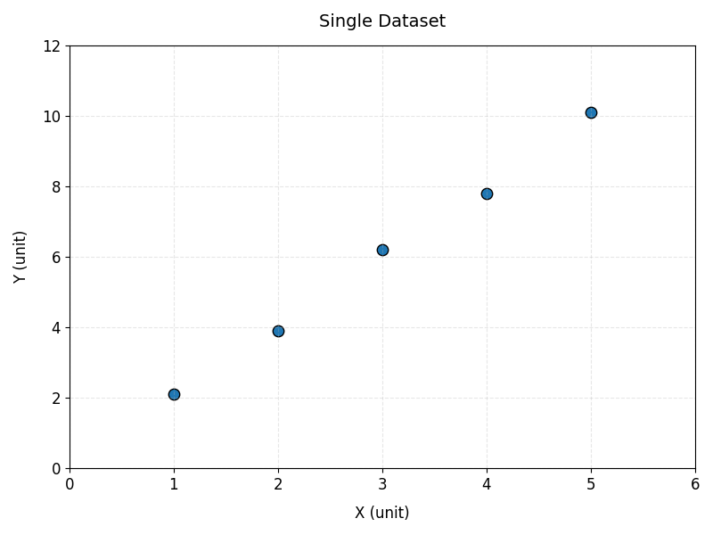
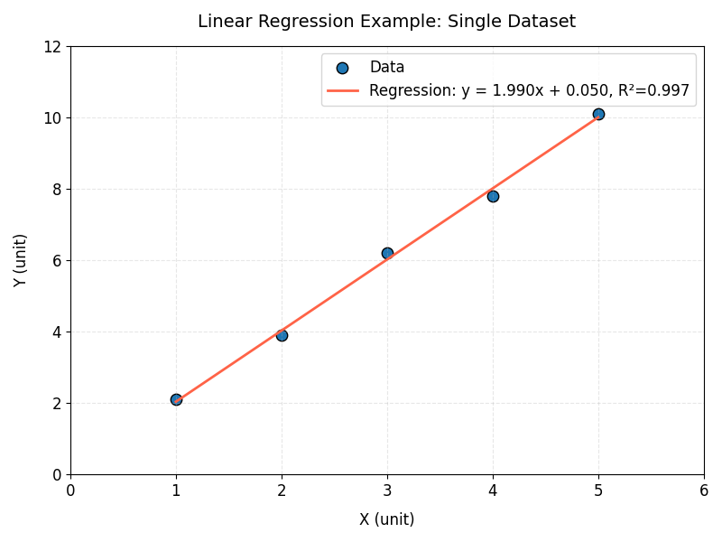
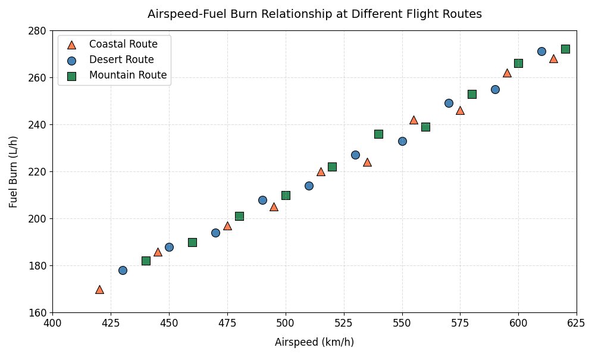
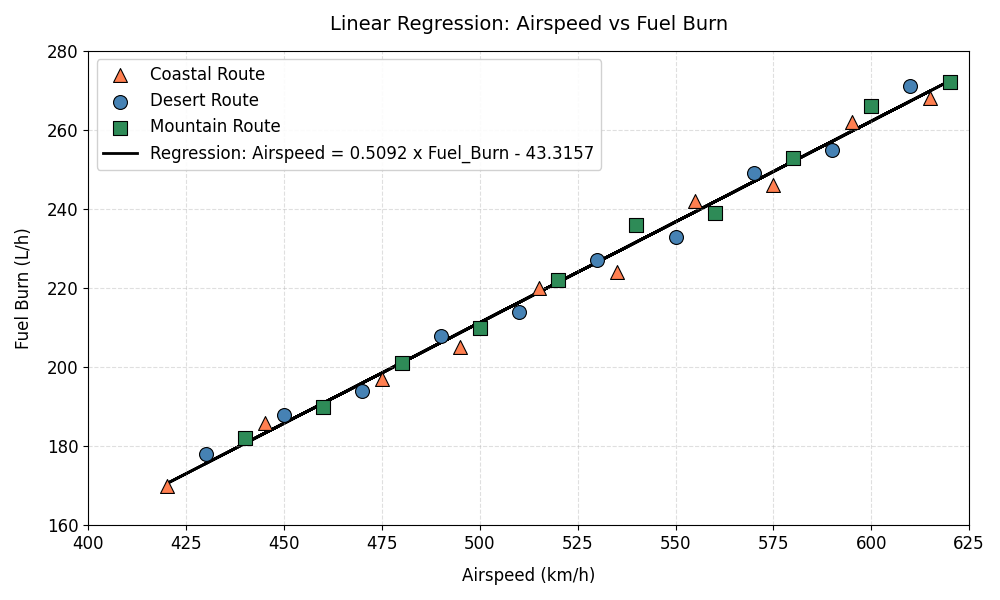

Sep 09, 2026 | 1462 words | 15 min read
12.1.1. PCMs: Linear Regression in Python#
This page introduces linear regression in Python and demonstrates how to use the
numpy library to build linear regression models.
If you need a refresher on the concepts of linear regression, review Linear Regression in Excel materials.
Why Use Linear Regression?#
Linear regression is used when you suspect a linear relationship between two variables and want to quantify that relationship. A linear regression model can help you:
Describe the relationship between variables (e.g., determine the slope and direction of the relationship).
Predict new values based on existing data.
Evaluate how well a line fits the data using the coefficient of determination, \(r^2\).
Common applications include:
Calibrating sensors against known standards
Estimating how test scores change with study time
Determining rates of change in experimental data
Comparing measurements collected by different instruments
Before fitting a linear regression model, it is good practice to create a scatter plot of the data. If the relationship appears curved rather than linear, a different modeling approach may be more appropriate.
The numpy.polyfit() Function#
The numpy library contains the polyfit() function, which fits a polynomial of a
specified degree to a dataset by minimizing the sum of squared residuals (differences
between observed and predicted values). For a linear regression model, we fit a
polynomial of degree 1 (a straight line).
coefficients = np.polyfit(x, y, 1)
The function returns an array of coefficients, ordered from the highest degree term to the lowest:
coefficients[0]-> slope of the regression linecoefficients[1]-> y-intercept
numpy.polyfit() does not automatically calculate a coefficient of determination
(\(r^2\)). Instead, \(r^2\) must be calculated manually using the sum of squared
errors (SSE) and the sum of squares total (SST):
Coefficient of Determination Formula
where SSE is the sum of squared differences between the observed and predicted y-values, and SST is the sum of squared differences between the observed y-values and their mean.
Linear Regression with a Single Dataset#
The following example demonstrates a typical workflow for fitting a linear regression model to a single dataset.
1. Define or Import the Data#
Begin by importing the required libraries and creating NumPy arrays for the independent
variable (x) and dependent variable (y).
import numpy as np
import matplotlib.pyplot as plt
x = np.array([1, 2, 3, 4, 5])
y = np.array([2.1, 3.9, 6.2, 7.8, 10.1])
2. Create a Scatter Plot of the Data#
Before fitting a linear regression model to the data, view and analyze the data to determine if the y and x values have a linear relationship.
plt.figure(figsize=(8, 6))
plt.scatter(x, y, edgecolor="black", s=80)
plt.title("Single Dataset", fontsize=14, pad=15)
plt.xlabel("X (unit)", fontsize=12, labelpad=10)
plt.ylabel("Y (unit)", fontsize=12, labelpad=10)
plt.xlim(0, 6)
plt.ylim(0, 12)
plt.tick_params(axis="both", which="major", labelsize=12)
plt.grid(alpha=0.3, linestyle="--") # Add a light grid for better visibility
plt.tight_layout()
plt.show()

Fig. 12.1 Five blue circular data points with black outlines, at approximately (1, 2.1), (2, 3.9), (3, 6.2), (4, 7.8), and (5, 10.1). The x-axis is labeled “X (unit)” and ranges from 0 to 6; the y-axis is labeled “Y (unit)” and ranges from 0 to 12. The points form a clear upward linear trend, indicating that Y increases as X increases. Light gray dashed grid lines run across the plot.#
3. Fit the Regression Model#
Unlike some machine learning libraries, numpy.polyfit() works directly with
one-dimensional arrays, so no reshaping of x is required.
coefficients = np.polyfit(x, y, 1)
slope = coefficients[0]
intercept = coefficients[1]
Why a Degree of 1?
The second argument to np.polyfit() specifies the degree of the polynomial to fit. A
degree of 1 fits a straight line (linear regression). A degree of 2 would fit a
quadratic curve, and so on.
4. Compute Predicted y-values and \(r^2\)#
Use the fitted coefficients to generate predicted y-values, then calculate the sum of squared errors (SSE), the sum of squares total (SST), and the coefficient of determination (\(r^2\)).
y_pred = slope * x + intercept
sse = np.sum((y - y_pred)**2)
sst = np.sum((y - np.mean(y))**2)
r2 = 1 - (sse / sst)
Note
You can also use np.poly1d(coefficients) to create a callable polynomial function
instead of manually writing slope * x + intercept. Both approaches produce the same
predicted values.
5. Extract Model Results#
After fitting the model, print the slope, intercept, and \(r^2\) value.
print(f"Slope: {slope:.3f}")
print(f"Intercept: {intercept:.3f}")
print(f"r^2: {r2:.3f}")
--- Output ---
Slope: 1.990
Intercept: 0.050
r^2: 0.997
6. Plot the Data and Regression Line#
Visualizing the regression model helps confirm that the fitted line appropriately represents the data.
First, generate a set of evenly spaced x-values using np.linspace(). This is necessary
when a dataset only has a few data points. Creating an array of multiple x-values for
the model helps avoid a jagged or angled line.
x_line = np.linspace(x.min(), x.max(), 100)
Next, use the fitted slope and intercept to predict y-values along the regression line.
y_line = slope * x_line + intercept
Finally, plot the data and fitted line.
plt.figure(figsize=(8, 6))
plt.scatter(x, y, label="Data", edgecolor="black", s=80)
plt.plot(x_line,
y_line,
color="tomato",
label=f"Regression: y = {slope:.3f}x + {intercept:.3f}, r^2={r2:.3f}",
linewidth=2)
plt.title("Linear Regression Example: Single Dataset", fontsize=14, pad=15)
plt.xlabel("X (unit)", fontsize=12, labelpad=10)
plt.ylabel("Y (unit)", fontsize=12, labelpad=10)
plt.xlim(0, 6)
plt.ylim(0, 12)
plt.tick_params(axis="both", which="major", labelsize=12)
plt.legend(fontsize=12)
plt.grid(alpha=0.3, linestyle="--") # Add a light grid for better visibility
plt.tight_layout()
plt.show()

Fig. 12.2 The same five points from the previous figure, now with a red regression line that closely fits them. The legend reports the fit as y = 1.990x + 0.050 with \(r^2 = 0.997\). The x-axis is labeled “X (unit)” and the y-axis is labeled “Y (unit)”.#
Multi-Dataset Example: Fitting a Linear Regression Model#
Linear Regression with Grouped Observations#
In many engineering and scientific datasets, measurements are collected from multiple locations, test facilities, flight routes, or experimental groups. While these groups may be distinguished in a plot, a single regression model can still be fit to all observations to describe the overall relationship between the variables.
Aerospace engineers often study how aircraft performance changes under different operating conditions. In this example, flight tests were conducted along several routes to investigate how cruising airspeed affects fuel consumption.
Example Dataset
Download flight_data.csv to
follow along with the steps below.
routeidentifies the flight test route environmentairspeed_kmhis the aircraft cruising speed (km/h)fuel_burn_lphis the fuel consumption rate (liters per hour, l/h)
route, airspeed_kmh, fuel_burn_lph
Desert, 430, 178
Desert, 450, 188
Desert, 470, 208
...
Mountain, 440, 182
Mountain, 460, 190
Mountain, 480, 201
...
Coastal, 420, 170
Coastal, 445, 186
Coastal, 475, 197
...
1. Import and Plot the Data#
import pandas as pd
import numpy as np
import matplotlib.pyplot as plt
df = pd.read_csv("flight_data.csv")
x = df["airspeed_kmh"]
y = df["fuel_burn_lph"]
Import and plot the data on a scatter plot to analyze the relationship between air speed
and fuel burn. This example uses a for loop and the .groupby() function to group the
data by route.
Grouping Data with .groupby()#
When working with datasets, we often want to analyze or visualize data separately for different categories. For example, the flight dataset contains measurements from multiple routes:
route |
airspeed_kmh |
fuel_burn_lph |
|---|---|---|
Desert |
450 |
180 |
Desert |
520 |
220 |
Mountain |
480 |
210 |
Coastal |
550 |
250 |
Instead of plotting all data points together, we may want a separate set of points for each route. The pandas .groupby() method allows us to split a DataFrame into smaller groups based on a column:
df.groupby("route")
This tells pandas: “find all rows that have the same value in the route column and organize them into separate groups.”
The result is a collection of groups. Each group contains:
The group name – the value used for grouping (for example, “Desert”)
The group DataFrame – all rows that belong to that group
Because .groupby() creates multiple groups, we can use a for loop to go through each group one at a time.
for site, group in df.groupby("route"):
During each loop iteration…
sitestores the route name (the group label)groupstores only the rows from that route
For example, the first loop iteration might look like:
site = "Desert"
group =
route airspeed_kmh fuel_burn_lph
0 Desert 450 180
1 Desert 520 220
The second iteration would contain the Mountain route data, and so on. This allows us to customize the plot for each group by assigning different colors, markers, and labels.
# Loop through each route separately
# site = route name (Desert, Mountain, Coastal)
# group = DataFrame containing only that route's data
for site, group in df.groupby("route"):
ax1.scatter(
group["airspeed_kmh"], # x-values for this route
group["fuel_burn_lph"], # y-values for this route
color=site_colors[site],
marker=site_markers[site],
label=site_labels[site],
s=100,
edgecolors="white",
linewidths=0.8,
zorder=3
)
The follwowing is the complete code for this example:
fig1, ax1 = plt.subplots(figsize=(8, 6))
site_colors = {"Desert": "steelblue",
"Mountain": "seagreen",
"Coastal": "coral"}
site_markers = {"Desert": "o",
"Mountain": "s",
"Coastal": "^"}
site_labels = {"Desert": "Desert Route",
"Mountain": "Mountain Route",
"Coastal": "Coastal Route"}
for site, group in df.groupby("route"):
ax1.scatter(
group["airspeed_kmh"],
group["fuel_burn_lph"],
color=site_colors[site],
marker=site_markers[site],
label=site_labels[site],
s=100,
edgecolors="white",
linewidths=0.8,
zorder=3
)
# Add a descriptive title to the plot
ax1.set_title(
"Airspeed-Fuel Burn Relationship at Different Flight Routes",
fontsize=14, pad=15)
ax1.set_xlabel("Airspeed (km/h)", fontsize=12, labelpad=10)
ax1.set_ylabel("Fuel Burn (L/h)", fontsize=12, labelpad=10)
ax1.tick_params(axis="both", labelsize=11)
ax1.set_xlim(400, 625)
ax1.set_ylim(160, 280)
ax1.legend(framealpha=0.9, fontsize=11)
ax1.grid(True, linestyle="--", alpha=0.4)
plt.tight_layout()
plt.show()

Fig. 12.3 Fuel burn (L/h) increases with airspeed (km/h) across three flight routes. Orange triangles mark the Coastal Route, blue circles the Desert Route, and green squares the Mountain Route. Points span roughly 420 to 620 km/h on the x-axis and 170 to 275 L/h on the y-axis. All three routes follow the same upward trend, which is why a single regression line can be fit to the combined data.#
2. Prepare the Data#
Since numpy.polyfit() works directly with one-dimensional arrays, x and y can be
converted to NumPy arrays without any reshaping.
X = df["airspeed_kmh"].values
y = df["fuel_burn_lph"].values
3. Fit the Regression Model#
Use np.polyfit() to fit a degree-1 (linear) polynomial to the data.
coefficients = np.polyfit(X, y, 1)
slope = coefficients[0]
intercept = coefficients[1]
4. Compute Predicted y-values#
Generate predicted y-values for the regression now for calculation in the next step.
y_pred = slope * X + intercept
5. Extract the Results#
After fitting the model, extract the slope, intercept, the sum of squared errors (SSE), the sum of squares total (SST), and coefficient of determination (\(r^2\)).
sse = np.sum((y - y_pred)**2)
sst = np.sum((y - np.mean(y))**2)
r2 = 1 - (sse / sst)
print(f"Slope: {slope:.4f}")
print(f"Intercept: {intercept:.4f}")
print(f"r^2: {r2:.4f}")
print(f"SSE: {sse:.4f}")
print(f"SST: {sst:.4f}")
---Output---
Slope: 0.5092
Intercept: -43.3157
r^2: 0.9931
SSE: 186.4104
SST: 27129.2000
6. Plot the Data and Regression Line#
Create a scatter plot for each route and overlay a single regression line fit to all observations.
fig1, ax2 = plt.subplots(figsize=(10, 6))
for site, group in df.groupby("route"):
ax2.scatter(
group["airspeed_kmh"],
group["fuel_burn_lph"],
color=site_colors[site],
marker=site_markers[site],
label=site_labels[site],
s=100,
edgecolors="black",
linewidths=0.8,
zorder=2 # Plot scatter points in front
)
ax2.plot(X, slope * X + intercept, color="black", linewidth=2,
label=f"Regression: Fuel_Burn = {slope:.4f} x Airspeed - {abs(intercept):.4f}",
zorder=1) # Plot regression line behind scatter points
ax2.set_title("Linear Regression: Airspeed vs Fuel Burn", fontsize=14, pad=15)
ax2.set_xlabel("Airspeed (km/h)", fontsize=12, labelpad=10)
ax2.set_ylabel("Fuel Burn (L/h)", fontsize=12, labelpad=10)
ax2.set_xlim(400, 625)
ax2.set_ylim(160, 280)
ax2.tick_params(axis="both", labelsize=12)
ax2.legend(framealpha=0.9, fontsize=12)
ax2.grid(True, linestyle="--", alpha=0.4)
plt.tight_layout()
plt.show()
Note
Since the data points are not sorted by airspeed, plotting X directly with
ax2.plot() may produce a jagged line if the x-values are out of order. If this occurs,
sort the arrays by X before plotting, or use np.linspace() to generate an evenly
spaced, sorted set of x-values (as in the single dataset example) for a smooth line.
Understanding the Plot#
The resulting figure contains:
Data points from three flight routes:
Desert
Mountain
Coastal
A single regression line fit to all observations
A legend identifying each route and the regression model
This example demonstrates how a categorical variable can be used to distinguish groups in a visualization while fitting a single regression model to the complete dataset.

Fig. 12.4 A single black regression line is fit through all three routes at once. The legend labels it “Airspeed = 0.5092 x Fuel_Burn - 43.3157” and identifies each route marker. The x-axis is labeled “Airspeed (km/h)” and the y-axis “Fuel Burn (L/h)”, and the line tracks the points closely across the full range.#
Summary#
Linear regression is a foundational tool for modeling and analyzing relationships
between variables. In Python, the numpy library makes it straightforward to build and
evaluate linear models using the polyfit() function.
In this module, you learned how to:
Visualize data with scatter plots to assess whether a linear model is appropriate
Fit a linear regression model using
np.polyfit()Interpret key model outputs, including slope, intercept, and coefficient of determination (\(r^2\)), calculating \(r^2\) manually from SSE and SST
Generate predictions and plot regression lines to evaluate model fit
You also explored how linear regression can be applied to:
A single dataset to model a simple relationship
Grouped datasets, where observations from multiple categories are visualized separately but modeled together
Overall, linear regression provides a simple yet powerful way to quantify trends, make predictions, and interpret relationships in engineering and scientific data.